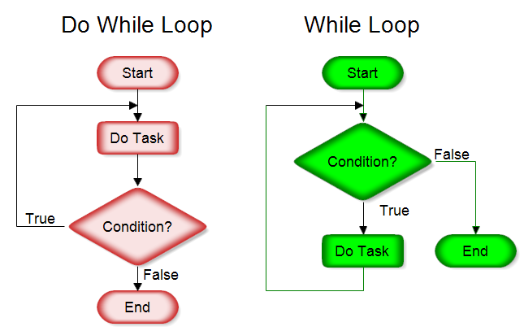
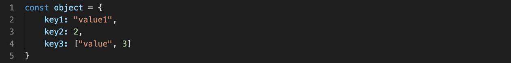
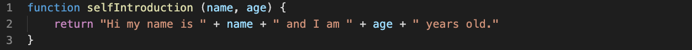

Webpages are made up of a whole lot of elements. HTML or Hyper Text Markup Language can be thought of like a house. It is the structure, the foundation. CSS or Cascading Style Sheets is like the decorative elements of the house like the painting, door style, furniture etc. Without the house you can’t decorate it and without the decorative elements your house will be empty and bland. Then there is Javascript. Continuing with the house analogy you can think of it like the electrical wiring and plumbing, it's there hidden but it is vital for living in the house and allows you to interact with lights and the shower.
What's a Control Flow and what are Loops?
Control flow is the order of how statements, instructions or function calls are executed or evaluated. Loops are a form of control flow which takes a statement, instructions or function calls and iterates or goes through them until a flag/condition is met.
This is a For Loop diagram showing what a Control Flow is.
You can think of a control flow like an average daily routine. You wake up then have to make a decision, do you brush your teeth first or eat breakfast. If your mouth is feeling extra dirty maybe you go and brush your teeth first. Then when you go to choose your breakfast do you choose the toast or toast and eggs? It would depend on how hungry you might be. You go to work and would make a bunch of decisions. Then you would head home, have dinner, relax and then go to sleep. This whole process then repeats itself the next day. Sometimes there is a breaking condition in which the control loop will stop. In the case of this analogy, the weekend might be a break in the control flow as a weekend routine is typically different to a weekday routine.

An example of a Do While Loop and a While Loop.
As for a loop you can think of the average daily routine analogy again. Why does the person go to sleep? The condition in this case would be a lack of energy/the person is tired. Like in the control flow analogy, you might break from the loop because of the weekend being a different routine or loop. The other break condition might be… death but now we’re getting philosophical, let’s stick to programming.
So what is a DOM?
Your browser needs to process all the HTML, CSS and Javascript to display a web document. Going one step further there is a hierarchy that browsers use to make sense of each of the code documents that make up the web document. This is where the DOM or Document Object Model comes in. This is a simplified graphic showing what the DOM might look like:
A simple graphic showing what the DOM is.
Each element such as the head, body, divs, h1 elements are known as nodes. Every element in HTML has a type associated to it. Each of these types go off from the Node base and makes up all the nodes.
Above the HTML node is the Document Object. Through Javascript you can make changes to the Document Object such as dynamically adding elements, removing them, animating them and setting events to elements to name a few.
This shows what a Window Object is and what a Document Object is.
Above the Document Object is the Window Object. The Window Object is responsible for accessing the current URL, getting frame information, using local storage, seeing screen information, using the scrollbar and all sorts of other things that are applicable to the container that your page is shown in.
Objects vs Arrays
An array can hold strings, ints, floats, and arrays.
An array is a data structure that contains data that is accessible through the index(a number starting from 0 going to the length of the array ) of the item in the array.

Objects can also hold strings, ints, floats, and arrays. However, the values are found with a key. This is a key:value pair.
An object is a data structure that contains data through key, value pairs. Unlike in an array, you can access the values by the key that is associated with it which is the key difference between them.
Functions

A simple function that returns a small self introduction string.
Functions can be thought of like containers for little segments of your program. Usually a function returns a value which can then be used for other functions. Functions are useful for breaking code up into manageable and readable segments.
Finally
To have a great website, an understanding of Javascript and the DOM is needed to make it interactable. Without interactivity, websites will look great but won't have the functionality needed for modern web processes like shopping carts, or sorting products.